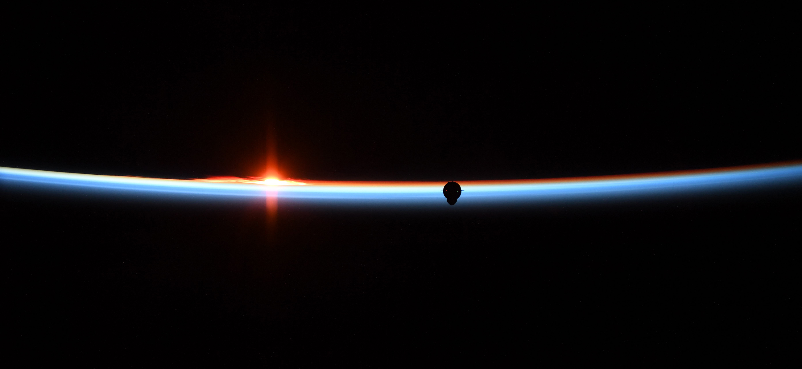

Transport
Falcon 已提供可重复使用的轨道发射能力；Dragon 负责运送货物与人员；Starship 则围绕完全、快速重复使用进行设计，以构建规模更大的太空运输系统。
![SpaceX](data:image/svg+xml,%3csvg%20xmlns='http://www.w3.org/2000/svg'%20width='147'%20height='19'%20viewBox='0%200%20147%2019'%20fill='none'%20role='img'%20aria-label='SpaceX'%3e%3cpath%20d='M33.4556%207.10059C35.9425%207.10059%2037.5024%208.14389%2037.5024%209.99707V11.2383C37.5024%2013.2081%2036.1594%2014.0693%2033.6704%2014.0693H24.7524V18.4062H21.3345V7.10059H33.4556ZM146.805%200.544922V0.561523C141.398%201.00137%20120.15%203.63015%20105.414%2018.4062H99.9458L100.557%2017.7988C103.641%2014.8268%20117.282%202.23051%20146.803%200.542969L146.805%200.544922ZM56.2397%2018.4043H52.1655L50.3599%2015.9287H39.8169L41.6274%2014H48.9526L45.4292%209.17285L47.5093%206.62012L56.2397%2018.4043ZM72.1841%207.09863C74.0086%207.09865%2075.3021%207.72865%2075.6343%209.07031H62.8081V16.2803H75.6343C75.2694%2017.7734%2074.4885%2018.4042%2072.2827%2018.4043H62.5786C60.9037%2018.4043%2059.3268%2017.7248%2059.3267%2015.9209V9.58203C59.3267%207.778%2060.9037%207.09868%2062.5786%207.09863H72.1841ZM90.7222%2012.834H83.8247V16.2803H95.6489V18.4043H80.3481V10.8975H90.7222V12.834ZM120.998%2018.4043H115.584L110.775%2014.9082H110.777C111.663%2014.2168%20112.602%2013.5232%20113.51%2012.9014L120.998%2018.4043ZM12.9351%207.09863C14.8252%207.09865%2015.9037%208.0272%2016.2358%209.07031H3.59424V11.5049H13.3979V11.5029C15.3722%2011.6154%2016.5677%2012.4597%2016.5679%2014.0488V15.8535C16.5677%2017.6083%2015.5242%2018.4014%2013.4331%2018.4014H3.43018C1.52352%2018.4014%200.428522%2017.6897%200.112793%2016.2783H13.4849V13.6934H3.54541C1.70432%2013.7036%200.459473%2012.8582%200.459473%2011.3691V9.58203C0.459473%207.87612%201.66924%207.09863%203.77686%207.09863H12.9351ZM24.7524%2012H33.0435C34.3863%2012%2034.5356%2011.5512%2034.5356%2010.7412V10.2979C34.5356%209.50218%2034.3371%209.07228%2032.8774%209.07227H24.7729L24.7524%2012ZM109.604%209.87891C108.627%2010.4554%20107.562%2011.1202%20106.646%2011.7334L100.298%207.09863H105.705L109.604%209.87891ZM109.607%209.88086L109.604%209.87891L109.607%209.87793V9.88086ZM95.811%209.07031H80.3481V7.09863H95.811V9.07031Z'%20fill='%23000000'/%3e%3c/svg%3e) 非官方概念 / 2026
非官方概念 / 2026
Mission Architecture / 02
Transport. Connect. Compute. 以现役能力、持续运营的服务与仍在研发中的系统，共同构建面向多行星未来的一体化基础设施。

这项使命并不是把彼此无关的产品简单拼接在一起：运输系统打开进入太空的通道，通信系统连接人与机器，计算系统则拓展轨道基础设施未来能够承担的任务。
Falcon 已提供可重复使用的轨道发射能力；Dragon 负责运送货物与人员；Starship 则围绕完全、快速重复使用进行设计，以构建规模更大的太空运输系统。
Starlink 通过低地球轨道卫星星座提供宽带互联网服务。实际可用情况取决于所在地区、网络容量及当地监管批准。
STARMIND 被描述为轨道 AI 计算系统。它的研发状态是整体架构的一部分，而不是可以略过的脚注，因此必须被清晰标明。
四类任务界面展现这套系统如何服务于商业载荷、载人航天、宽带通信，以及未来的轨道计算。

可重复使用的轨道发射Falcon 9 是一款可重复使用的两级轨道级运载火箭。最新发射排期与任务结果请以官方实时发射页面为准。
查看发射任务 ↗人员 + 货物Dragon 最多可将七人送入地球轨道，同时支持载人和货运任务。SpaceX 自 2012 年起向国际空间站运送货物，并自 2020 年起执行 NASA 商业载人计划的载人任务。
了解载人航天 ↗
低地球轨道宽带Starlink 是为提供宽带互联网服务而设计的卫星星座。服务内容与可用情况会因市场及监管条件而不同。
访问 Starlink 官网 ↗
STARMIND / ComputeSTARMIND 是一套目前仍在研发中的轨道 AI 计算系统。本概念站将这一研发状态保持在最醒目的信息层级。
了解 STARMIND ↗03 / Integrated path
贯穿整个架构的核心理念是：发射并非最终产品，而是系统的第一层。它让人员与载荷得以运输、让地球实现连接，并为未来的轨道计算提供支撑。
可重复使用的发射系统为载荷、货物与人员打开太空运输通道。
低地球轨道基础设施将用户、飞行器与分布式服务连接起来。
STARMIND 提出下一层能力，同时继续明确标注为 IN DEVELOPMENT（研发中）。
Transport. Connect. Compute. 构筑通往多行星未来的道路。